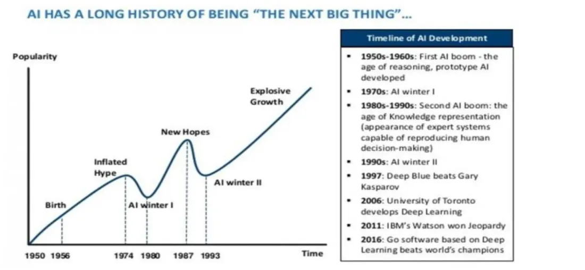
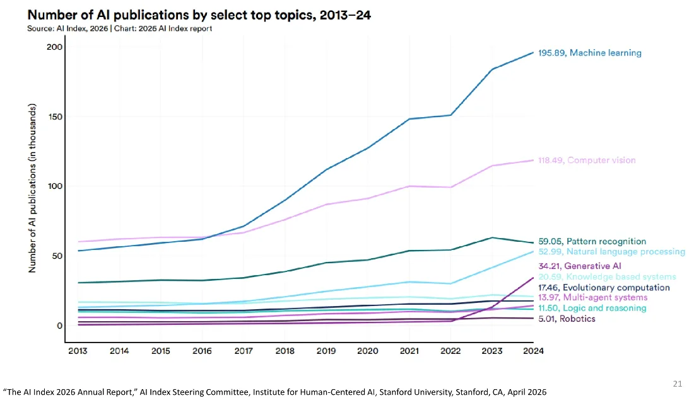
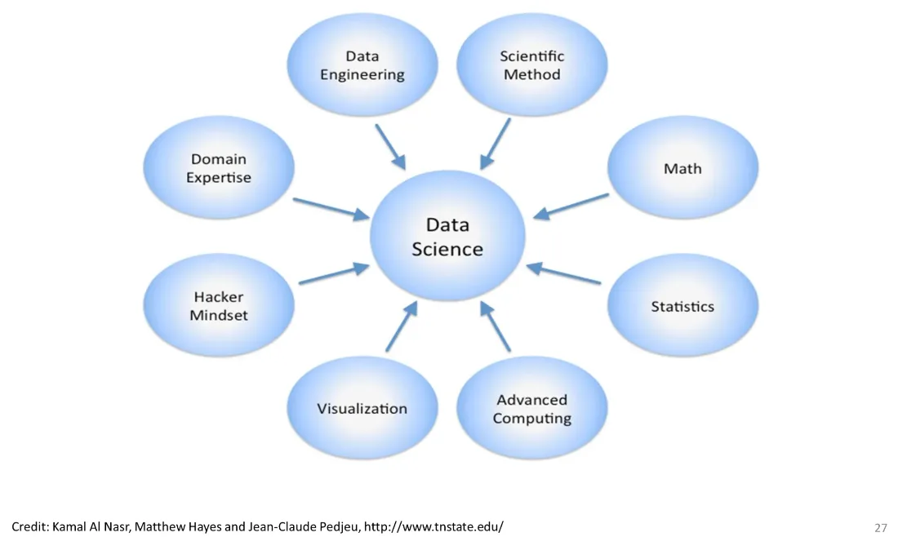
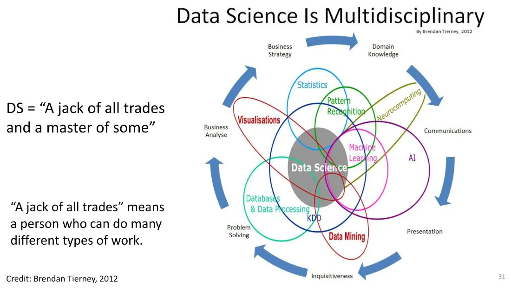
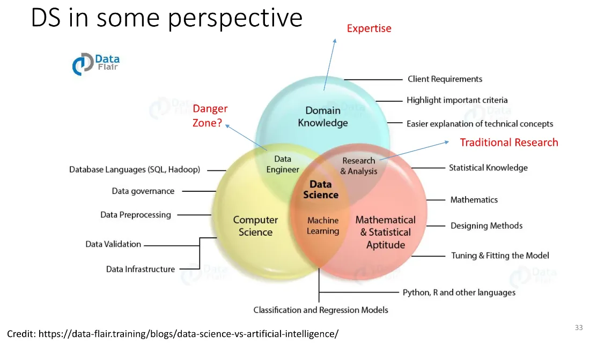
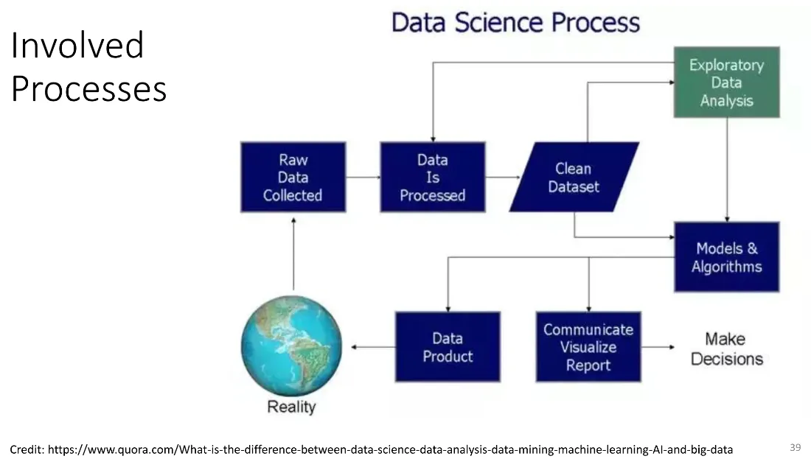
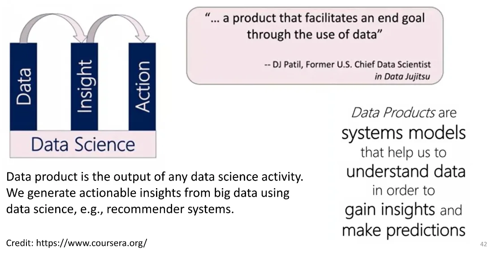
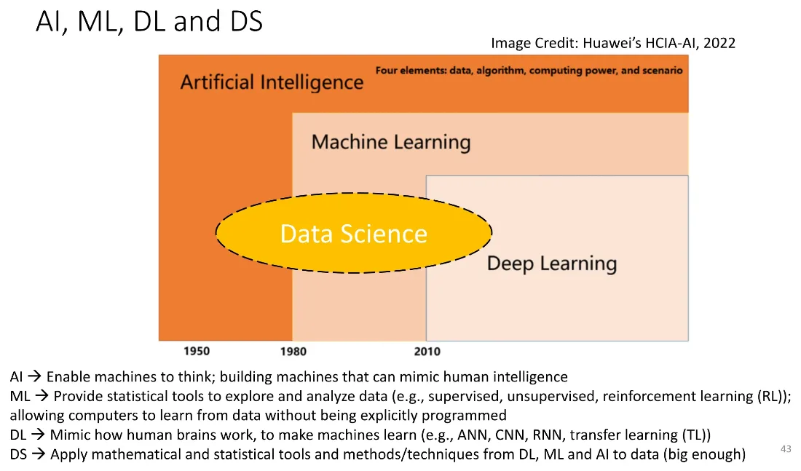
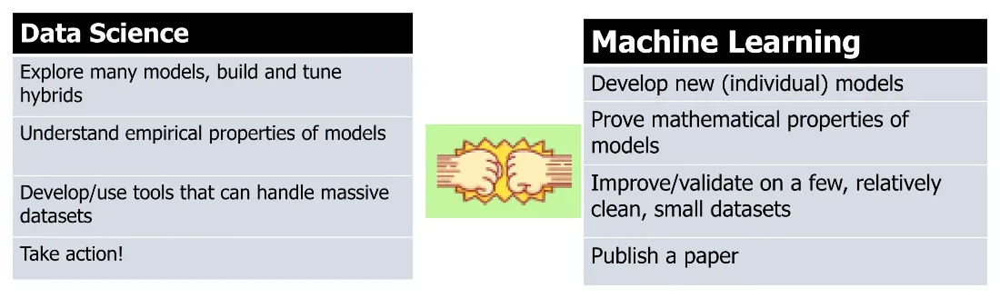
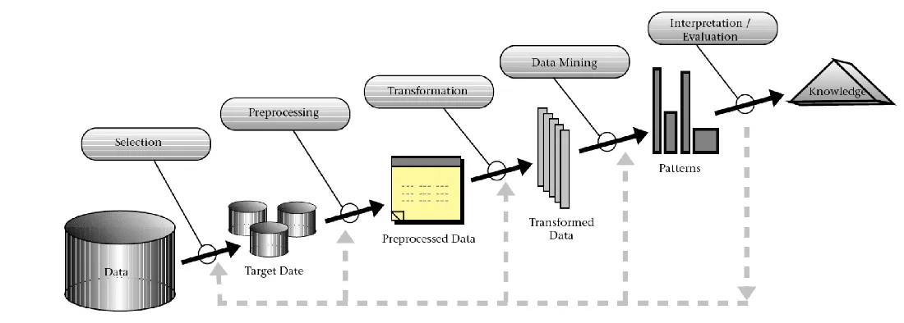

Group 2 (ศุกร์ 13.00-16.00 @ LX 12/1) — สรุปจากสไลด์
INT182_01_Intro-to-DS-Engineering-and-AI.pdf(51 หน้า, อ.พรชัย มงคลนาม) เป็นโครงหลัก ตั้งแต่หน้า 19 ถึงหน้า 51 ซึ่งเป็นช่วงที่สอนต่อจากสัปดาห์ที่แล้ว แล้วเสริมสิ่งที่อาจารย์พูดเพิ่มจาก transcript ของคาบ (INT182_G2_20260814.docx)⚠️ transcript เป็นคำถอดเสียงอัตโนมัติ คุณภาพต่ำหลายช่วง (คำผิด/ประโยคขาด) — ส่วนที่มาจาก transcript อย่างเดียวจะระบุไว้ว่า (จาก transcript) และคงไว้เฉพาะที่อ่านเข้าใจได้ชัดเจน
ช่วงท้ายคาบอาจารย์เปิดสไลด์ชุดถัดไป (EDA & Model Fitting) ไปได้ประมาณ 16 หน้าแรก เนื้อหาส่วนนั้นอยู่ในโน้ต Week 3 ทั้งก้อน เพื่อไม่ให้หัวข้อเดียวกันแตกเป็นสองไฟล์
Agenda
- ทบทวน AI winter → ดัชนีชี้วัดทิศทาง AI
- ปริมาณข้อมูลที่โลกผลิต และคำคมสองประโยคที่ต้องจำ
- ที่มาของคำว่า Data Science / Data Scientist
- Big Data — 5V + 2V และ structured vs unstructured
- Data Science ทำอะไรบ้าง — pipeline, life cycle, 4 A's
- ทีมงานและงาน Data Engineering
- AI / ML / DL / DS ต่างกันอย่างไร
- KDD กับ Data Mining
- แหล่ง dataset และเครื่องมือ
- ลงมือ: Orange Data Mining
01 ทบทวน — AI มีขึ้นมีลง (hype กับ winter)
คาบที่แล้วหยุดที่กราฟวิวัฒนาการของ AI ที่เป็นขึ้น ๆ ลง ๆ ช่วงที่ยุบตัวเรียกว่า AI winter
(จาก transcript) อาจารย์อธิบายที่มาของคำว่า winter ว่าเทียบกับหน้าหนาวที่กิจกรรมน้อย สัตว์จำศีล (hibernate) — ช่วง AI winter คือช่วงที่กิจกรรมด้าน AI ซบเซา เงินลงทุนน้อย ไม่ค่อยมี investment จากภาครัฐหรือเอกชนเข้ามา แล้วมันจะกลับขึ้นมาใหม่เป็นวัฏจักร ส่วนตอนนี้อยู่ในช่วงขาขึ้น ดัชนีตลาดฝั่งไอทีมี valuation / market value สูงมากจนหลายฝ่ายเฝ้าระวังกันอยู่

02 ดัชนีชี้วัดทิศทางของ AI
สไลด์ยกข้อมูลจาก “The AI Index 2026 Annual Report,” AI Index Steering Committee, Institute for Human-Centered AI, Stanford University (เมษายน 2026) มาสองหน้า
- AI Publications — จำนวนผลงานตีพิมพ์ใช้เป็นดัชนีชี้ว่าองค์กร/หน่วยงานไหนมีการค้นคว้าวิจัยมากน้อยแค่ไหน (จาก transcript) ทั้งหน่วยงานภาครัฐ บริษัทเอกชน และมหาวิทยาลัย ต่างก็ตีพิมพ์เผยแพร่ผลงานกัน ซึ่งส่วนใหญ่มาจากงาน R&D
- AI Publications by Fields — ดูได้ว่าใต้ร่ม AI มี field ย่อยอะไรที่คนศึกษาวิจัยกันบ้าง (จาก transcript) ที่อาจารย์ไล่ชื่อ: machine learning, computer vision, machine vision, pattern recognition, NLP, Generative AI, robotics
- AI Rankings — https://airankings.org/ ดูได้ว่าแต่ละ field มีที่ไหนทำวิจัย มีผู้เชี่ยวชาญ/อาจารย์/นักศึกษาปริญญาโท-เอกทำกันอยู่ที่ไหน (จาก transcript) อาจารย์เทียบว่ามี CS Rankings ที่กว้างกว่า ส่วน AI Rankings เจาะจงกว่า และข้อมูลอัปเดตเป็นระยะ
(จาก transcript) คำนิยามที่ย้ำในคาบ:
- Machine learning — ทำให้เครื่องเรียนรู้/ฉลาดขึ้นเองจากข้อมูล โดยที่โปรแกรมเมอร์ไม่ต้องเขียนโปรแกรมระบุขั้นตอนให้ชัดเจน (explicitly) เราแค่ป้อนข้อมูลไป train
- Computer vision (CV) — เกี่ยวข้องกับ image processing เอาไปใช้ตรวจจับ/จดจำใบหน้า หรือระบุแยกแยะวัตถุที่อยู่ในภาพ
- Machine vision — การเอา computer vision ไปประยุกต์กับฮาร์ดแวร์/อุปกรณ์ในโรงงาน เช่นระบบอัตโนมัติที่ต้องจดจำหรือนับของ ตัวอย่างที่อาจารย์เคยไปดูมาคือโรงงานไก่ย่างของ CP แถวมีนบุรี ที่ใช้กล้องจับภาพชิ้นไก่ที่ปิ้งออกมา แล้ววิเคราะห์ว่าไหม้เกินไปหรือเปล่า คุณภาพเป็นอย่างไร จำนวนชิ้นครบไหม โดยไม่ต้องใช้คน

03 โลกผลิตข้อมูลวันละเท่าไหร่
| ค่า | ความหมาย |
|---|---|
| Quintillion | 1018 = ล้าน × ล้าน × ล้าน |
| Exabyte | 1 quintillion bytes |
| ปี 2025 | ข้อมูลใหม่ทั่วโลกราว 400 quintillion bytes ต่อวัน และยังเพิ่มขึ้นเรื่อย ๆ ตามการใช้ AI |
| เทียบเป็นแผ่น DVD | ต้องใช้ DVD มาตรฐาน (4.7 GB) ประมาณ 95,000–120,000 ล้านแผ่นต่อวัน |
(ตัวเลขในสไลด์อ้างอิงคำตอบจาก DeepSeek, กรกฎาคม 2026)
(จาก transcript) ข้อมูลพวกนี้มาจากหลายรูปแบบและหลายแหล่ง — วิดีโอ streaming, เพลง, ภาพ, ตัวหนังสือ ฯลฯ ประเด็นที่อาจารย์ทิ้งท้ายคือ ข้อมูลเยอะไม่ได้แปลว่าดีเสมอไป ถ้ามีเยอะแต่ประมวลผลอะไรไม่ได้ก็ไม่เกิดประโยชน์
04 คำคมสองประโยคที่ต้องจำ
“Data is the new oil” — Clive Humby (2006)
“Data is the new oil. It’s valuable, but if unrefined it cannot really be used. It has to be changed into gas, plastic, chemicals, etc to create a valuable entity that drives profitable activity; so must data be broken down, analyzed for it to have value.”
Clive Humby เป็นผู้ประกอบการด้าน data commercialization ชาวอังกฤษ วลีนี้ถูก World Economic Forum หยิบไปใช้ในรายงานปี 2011
“AI is the new electricity” — Andrew Ng (2016)
Andrew Ng อดีต Chief Scientist ของ Baidu, ผู้ร่วมก่อตั้ง Coursera และอาจารย์พิเศษที่ Stanford
“Anything that a typical human can do with at most 1 sec of thought, can probably now or soon be automated with AI.” — เป็นกฎที่ไม่สมบูรณ์แบบ แต่ใช้ได้ดีพอสมควร
เหตุผลของการเปรียบเทียบ: เมื่อราวศตวรรษก่อนโลกเปลี่ยนผ่านสู่ยุคไฟฟ้า แทนที่เครื่องจักรไอน้ำ แล้วพลิกโฉมการขนส่ง การผลิต เกษตรกรรม สาธารณสุข — ตอนนี้ AI กำลังจะสร้างการเปลี่ยนแปลงขนาดใกล้เคียงกันกับหลายอุตสาหกรรม (หมายเหตุในสไลด์: latency ของ 5G ดีที่สุดอยู่ระดับ single-digit milliseconds)
(จาก transcript) อาจารย์โยงเข้ากับคำว่า democratize — AI เป็นสิ่งที่ทุกคนเข้าถึงได้เหมือนไฟฟ้า ไม่ได้จำกัดอยู่แค่คนกลุ่มเดียว อาจไม่ฟรี แต่ก็จับต้องได้ในราคาที่พอเหมาะ คล้ายกับที่เราจ่ายค่าไฟ ค่าโทรศัพท์ ค่าเน็ตเป็นรายเดือน
05 ที่มาของคำว่า Data Science และ Data Scientist
| คำ | ปี | ใคร |
|---|---|---|
| Data science | 1974 | Peter Naur เสนอให้ใช้แทนคำว่า computer science |
| Data scientist | 2008 | DJ Patil และ Jeff Hammerbacher เป็นผู้บัญญัติ |
(จาก transcript) Peter Naur เป็นคนดังในวงการภาษาโปรแกรม เป็นผู้วางกฎเกณฑ์/แกรมมาร์ให้ภาษาคอมพิวเตอร์ยุค 1960–1970 (ยุค Fortran, ALGOL) ก่อนจะมีภาษาอย่าง Java, C++, Python — ไอเดียเรื่อง data science เกิดขึ้นนานแล้ว แต่ไม่ได้แพร่หลาย จนคำว่า computer science ก็ยังใช้กันอยู่ ส่วน data scientist เกิดทีหลัง data science และเป็นการนิยาม บทบาท (role) ไม่ใช่สาขาวิชา
คำนิยามที่สไลด์ยกมา:
- Jeffrey Stanton (Syracuse University): “Data Science refers to an emerging area of work concerned with the collection, preparation, analysis, visualization, management and preservation of large collections of information.”
- Hilary Mason (chief scientist ที่ bit.ly): “A data scientist is someone who can obtain, scrub, explore, model and interpret data, blending hacking, statistics and machine learning.” — คือคนที่ได้ข้อมูลมา, ทำความสะอาด (scrub), สำรวจ, สร้างโมเดล และแปลความหมายจากโมเดลนั้น

DS = “A jack of all trades and a master of some”
(Brendan Tierney, 2012) — คนที่ทำได้หลายอย่าง แต่เชี่ยวชาญจริง ๆ แค่บางอย่าง (จาก transcript) อาจารย์เทียบกับ เป็ด ที่บินได้ ว่ายน้ำได้ แต่อาจไม่เก่งสักอย่าง
สไลด์หน้า “DS in some perspective” ยังชี้จุดที่เรียกว่า danger zone — บริเวณที่ทำ data อย่างเดียวโดยขาดทฤษฎีมา support

06 Big Data — 5 V's + 2 V's
| V | ความหมาย |
|---|---|
| Volume | ปริมาณมหาศาล คุณลักษณะที่รู้จักกันดีที่สุดของ big data |
| Velocity | ความเร็วของข้อมูลที่ไหลเข้ามาและความเร็วในการประมวลผล |
| Variety | ความหลากหลายของชนิดข้อมูล มาจากหลายแหล่ง |
| Veracity | คุณภาพของข้อมูล ความสะอาด ความถูกต้อง = ความเชื่อมั่น/ไว้ใจได้ในตัวข้อมูล |
| Value | ข้อมูลมีคุณค่าต่อการตัดสินใจ — สไลด์บอกว่านี่คือตัวที่สำคัญที่สุด |
| + Variability | ความหมายที่ดิ้นได้ตามบริบท หรือความไม่สม่ำเสมอในข้อมูล/ความเร็วในการโหลดเข้าฐานข้อมูล |
| + Visualization | ทำให้ข้อมูลที่เก็บและวิเคราะห์แล้วเข้าใจง่ายและอ่านง่าย |
Structured vs Unstructured
| ประเภท | ลักษณะ | ตัวอย่าง |
|---|---|---|
| Structured | มีโครงสร้างชัดเจน เข้าถึงและวิเคราะห์ได้ง่าย | ตาราง, ฐานข้อมูลเชิงสัมพันธ์ (มี primary key ชัดเจน) |
| Unstructured | ไม่มีรูปแบบโครงสร้างชัดเจน | text/comment, วิดีโอ, เพลง, ภาพ, สื่อมัลติมีเดีย |
| ก้ำกึ่ง (จาก transcript) | มี tag/โครงสร้างบางส่วน บางคนจัดเป็นกึ่งกลาง | XML, JSON |
(จาก transcript) ตัวอย่างการใช้ unstructured data: คอมเมนต์ใต้คลิป ต้องเอามาสกัดหา keyword ดูความถี่ของคำ แล้วตัดสินว่าเป็นคอมเมนต์เชิงบวกหรือลบ ซึ่งเป็นสิ่งที่ LLM/Gen AI ทำอยู่ทุกวันนี้
07 Data Science ทำอะไรบ้าง

องค์ประกอบหลัก
Data Collection → Data Cleaning and Preparation → Exploratory Data Analysis (EDA) → Data Modeling → Evaluation → Data Communication and Visualization
นิยามเชิงปฏิบัติ — DS คือทั้ง pipeline
Data Scientist สนใจและเข้าใจ ทั้ง pipeline ของการสกัดสารสนเทศออกจากข้อมูล ซึ่งมี 3 ขั้น (Tim Kraska)
- เตรียมก่อนรันโมเดล — gathering, cleaning, integrating, restructuring, transforming, loading, filtering, deleting, combining, merging, verifying, extracting, shaping
- รันโมเดล
- สื่อสารผลลัพธ์
(จาก transcript) อาจารย์อธิบายคำว่า pipeline ว่าเหมือน upstream / midstream / downstream หรือต้นน้ำ-กลางน้ำ-ปลายน้ำ เป็น workflow ที่ส่งต่อกันเป็น step คล้ายกับที่ทำกันใน software engineering
DS life cycle
- Requirement engineering
- Feature engineering — ใช้ domain knowledge สกัด feature (คุณลักษณะ/attribute/ตัวแปร) ออกจาก raw data
- Feature selection — เลือก subset ของ feature ที่เกี่ยวข้องจริง
- Modelling
- Deployment and maintenance

7 ขั้นตอนหลักของงาน DS
| ขั้น | หมายเหตุจากสไลด์ |
|---|---|
| 1. Business problem | ตั้งคำถาม “ทำไม” — สไลด์เขียนว่า “ทำตัวเป็นแบบเณรน้อยเจ้าปัญญา” |
| 2. Data acquisition | |
| 3. Data preparation | cleaning + transformation — กินเวลามากที่สุด |
| 4. Exploratory data analysis | ดู feature และ parameter — เป็นขั้นที่สำคัญที่สุด |
| 5. Data modeling | data mining, machine learning, deep learning — เป็นส่วนที่เทคนิคจัดที่สุด |
| 6. Visualization and communication | |
| 7. Deployment and maintenance |
(จาก transcript) ทั้งหมดนี้เป็น cycle ไม่ใช่เส้นตรง — พอ deploy จริงแล้วมี user เข้ามาใช้ ก็เก็บ feedback วนกลับไปปรับปรุงใหม่
4 A's ของ Data Science
บทบาทที่ data scientist ทำหรือช่วยคนอื่นทำ (Saltz & Stanton, 2018)
| A | ความหมาย |
|---|---|
| Data Architecture | วางสถาปัตยกรรมของระบบข้อมูล |
| Data Acquisition | การได้มาซึ่งข้อมูล / data collection |
| Data Analysis | วิเคราะห์ข้อมูล |
| Data Archiving | จัดเก็บเป็นบันทึกไว้สืบค้นย้อนหลังได้ (จาก transcript: เทียบกับหอจดหมายเหตุ หรือ version control ที่บอกได้ว่าใครเปลี่ยนอะไรเมื่อไหร่) |
08 ทีม Data Science และงานฝั่ง Data Engineering
| ตำแหน่ง | หน้าที่ |
|---|---|
| Data scientist (DS) | เตรียมข้อมูล ทำ feature engineering — สกิลที่มีค่าที่สุดคือการเทรนโมเดล |
| Data engineer (DE) | เน้นการได้มาซึ่งข้อมูล สร้าง data pipeline — อัตราส่วน DE:DS = 5:1 ไม่ใช่เรื่องแปลก |
| Data analyst (DA) | ช่วย DS เตรียมข้อมูล |
| Application architect (AA) | ออกแบบ solution ทั้งระบบ deploy และดูแลโมเดลใน production |
Data engineering ครอบคลุมอะไร
- Data pipelines — ระบบย้ายข้อมูลจากหลายแหล่ง (ฐานข้อมูล, API, ไฟล์) ไปยังที่เก็บและที่ประมวลผล
- Data storage — เลือกและดูแลที่เก็บให้เหมาะกับลักษณะข้อมูลและรูปแบบการ query (relational DB, data warehouse, data lake, NoSQL)
- Data transformation — ทำความสะอาดและแปลง raw data ให้พร้อมวิเคราะห์
- Data quality — ความถูกต้อง ครบถ้วน สม่ำเสมอ และทันเวลา
- ETL (Extract, Transform, Load) — (จาก transcript: บางที่เรียก ELT ก็แล้วแต่) ดึงข้อมูลออกมา → แปลง/ทำความสะอาด/แปลงฟอร์แมต → โหลดเข้าฐานเพื่อเอาไปวิเคราะห์ต่อ
เครื่องมือที่สไลด์ยกตัวอย่าง: SQL, NoSQL, Hadoop, Snowflake, Apache Spark, Airflow, Kafka และภาษา Python, Java, Scala บนคลาวด์ AWS / Azure / GCP
09 Data product → insight → actionable
Data product คือผลลัพธ์ของกิจกรรม data science ใด ๆ เช่นระบบแนะนำสินค้า (recommender system) — เราสร้าง actionable insight ออกมาจาก big data ด้วย data science
(จาก transcript) เทียบกับ work product ในวิศวกรรมซอฟต์แวร์ (requirement spec, test plan, test case, project plan, risk plan, prototype) — ฝั่ง data science ก็มี data product ของตัวเอง ไม่ว่าจะเป็นตัวโมเดล, weight, dataset ที่ใช้ train/test
คำที่ต้องแยกให้ออก:
- Insight = ความเข้าใจอย่างถ่องแท้/ลึกซึ้งที่ได้จากการวิเคราะห์ข้อมูล
- Actionable = ถ้าทำ X แล้ว Y จะดีขึ้นอย่างไร — พอรู้ insight แล้วต้อง take action ต่อได้ เช่นวิเคราะห์แล้วพบว่าจุดไหนทำให้สินค้าสู้คู่แข่งไม่ได้ ก็ไปเพิ่มทรัพยากรตรงจุดนั้น

10 AI / ML / DL / DS ต่างกันอย่างไร
| ตัวย่อ | นิยามตามสไลด์ |
|---|---|
| AI | ทำให้เครื่องคิดได้ — สร้างเครื่องที่เลียนแบบความฉลาดของมนุษย์ |
| ML | ให้เครื่องมือเชิงสถิติเพื่อสำรวจและวิเคราะห์ข้อมูล (supervised, unsupervised, reinforcement learning) ทำให้คอมพิวเตอร์เรียนรู้จากข้อมูลได้โดยไม่ต้องเขียนโปรแกรมระบุอย่างชัดเจน |
| DL | เลียนแบบการทำงานของสมองมนุษย์ (ANN, CNN, RNN, transfer learning) |
| DS | เอาเครื่องมือทางคณิตศาสตร์/สถิติ และเทคนิคจาก DL, ML, AI มาใช้กับข้อมูล (ที่ใหญ่พอ) |
(จาก transcript) คำอธิบายเสริม:
- AI กว้างที่สุด — เลียนแบบ ความฉลาด ของมนุษย์ จะทำด้วยวิธีไหนก็ได้ เช่นหุ่นยนต์สองขาที่ตีลังกาหรือเล่นปิงปองได้ก็นับเป็น AI
- DL เลียนแบบ สมอง ของมนุษย์ — ระบบประสาทเทียม (artificial neural network) มีหลายประเภท เช่น CNN ใช้กับ image classification, RNN ที่ป้อน feedback ย้อนกลับได้
- ML เป็นส่วนหนึ่งของ AI แต่ไม่ใช่ทั้งหมดของ AI — ดูจากสีของวงรีในสไลด์หน้า 43
- DS ยืมเทคนิคของคนอื่นมาใช้ ไม่ต้องสร้างใหม่เอง แล้วเน้นที่การใช้เลข/สถิติกับข้อมูลจริง
- timeline คร่าว ๆ ที่พูดในคาบ: AI ~1950 → machine learning ~1980 → deep learning ~2010 → LLM / ChatGPT ราวปี 2022–2023 (ช่วงหลังโควิด)

DS vs ML
| Machine Learning | Data Science |
|---|---|
| พัฒนาโมเดลใหม่ทีละตัว | สำรวจหลายโมเดล สร้างและจูน hybrid |
| พิสูจน์คุณสมบัติเชิงคณิตศาสตร์ของโมเดล | เข้าใจคุณสมบัติเชิงประจักษ์ (empirical) ของโมเดล |
| ปรับปรุง/ตรวจสอบบน dataset เล็ก สะอาด ไม่กี่ชุด | พัฒนา/ใช้เครื่องมือที่รับมือ dataset ขนาดมหึมาได้ |
| ตีพิมพ์ paper | Take action! |
(Daisy Zhe Wang, University of Florida, 2015)

11 KDD กับ Data Mining
KDD = Knowledge Discovery in Databases — เป็นคำที่กว้าง ครอบคลุมทั้ง data science, data mining, ฐานข้อมูล, visualization และสถิติ (ดูแผนภาพหน้า 47) กระบวนการคือโยนข้อมูลเข้ามาเก็บใน database/data warehouse → selection → preprocessing → transformation → data mining เพื่อหา pattern → แปลความหมาย → ได้ knowledge
Data mining (DM) คือกระบวนการดึงสารสนเทศออกมาจากฐานข้อมูลขนาดใหญ่ที่ก่อนหน้านี้เข้าใจไม่ได้และไม่รู้จัก แล้วเอาสารสนเทศนั้นไปใช้ตัดสินใจทางธุรกิจ — เป็นชุดวิธีการที่ใช้ในกระบวนการ knowledge discovery เพื่อหาความสัมพันธ์และ pattern ที่ยังไม่เคยรู้ เป็นจุดบรรจบของ AI, การจัดการข้อมูล, pattern recognition, visualization, machine learning และสถิติ
(จาก transcript) Data warehouse = คลังข้อมูล มองเป็นฐานข้อมูลขนาดใหญ่ที่หลากหลาย จุดสำคัญคือ ต้องมี time stamp / แบ่งตามช่วงเวลา (เรียกว่า temporal database) เพราะถ้าโยนข้อมูลเข้ามาโดยไม่รู้ว่าเกิดขึ้นเมื่อไหร่ ก็เปรียบเทียบเดือนต่อเดือนหรือปีต่อปีไม่ได้ และเลือก target date ด้วย selection ไม่ได้

12 แหล่ง dataset และเครื่องมือที่ใช้ในวิชานี้
Dataset repository
- https://archive.ics.uci.edu/ (UCI Machine Learning Repository)
- https://www.kaggle.com/
Software tools
- RStudio — https://posit.co/downloads
- Orange Data Mining — https://orangedatamining.com/
(จาก transcript) ให้ลงโปรแกรมทั้งสองตัวลงเครื่องตัวเองให้เรียบร้อย เพราะไม่ได้ใช้ห้องคอมพิวเตอร์
13 ลงมือ: Orange Data Mining
Orange เป็น visual programming — ลากวาง widget แล้วต่อสายเชื่อมกัน คล้าย Scratch ไม่ต้องเขียนโค้ด (แต่ต่อ Python Script เข้าไปผสมได้)
หลักการต่อ widget
- เริ่มจาก widget ฝั่ง input: File (CSV / Excel / เชื่อม SQL table) หรือ Datasets (ชุดข้อมูล built-in ที่มากับตัวโปรแกรม เช่น Iris, Titanic)
- แต่ละ widget มี input 1 ทาง แต่ แตก output ออกไปได้หลายทาง จะทำกี่เส้นทางขนานกันก็ได้
- ไฟล์ workspace ของ Orange นามสกุล
.ows(Orange Workspace) — ตัวอย่างที่แจกมาอยู่ในโฟลเดอร์code/ - คลิกขวาที่ widget เพื่อ rename ให้อ่านง่าย และอย่าลืม save เป็นระยะ
กลุ่ม widget ที่แตะในคาบ
| กลุ่ม | Widget | ใช้ทำอะไร |
|---|---|---|
| Data | File / Datasets | นำเข้าข้อมูล |
| Data | Data Table | ดูตารางข้อมูลดิบ ดูจำนวน instance / feature / missing |
| Data | Edit Domain | เปลี่ยนชื่อคอลัมน์ (ตอน raw data ไม่มี header) |
| Data | Select Columns | เลือกว่าคอลัมน์ไหนเป็น feature (x) คอลัมน์ไหนเป็น target (y) |
| Transform | rename / select column / row, split, merge | จัดรูปตาราง |
| Transform | Preprocess | Impute, Remove rows with missing values, Normalize ฯลฯ |
| Visualize | Scatter Plot | พล็อตจุดทีละคู่ตัวแปร มีตัวเลือก show regression line |
| Model | Linear Regression | ได้ intercept และ coefficient |
| Evaluate | Test and Score, Predictions | ทดสอบและทำนาย |
Dataset ที่ใช้
Automobile / imports-85 จาก UCI — เก็บข้อมูลรถยนต์ตั้งแต่ปี 1985 เอาไปประยุกต์กับงานประกันรถยนต์/ประกันอุบัติเหตุได้ (จาก transcript)
- 205 instances (row), 26 features, missing data 1.1%
- ราคา (attribute ที่ 26) เป็นชนิด continuous ช่วงประมาณ 5,000–45,000 USD
- คอลัมน์ที่ไม่ใช่ตัวเลข เช่น body-style (hardtop, wagon, sedan…), aspiration (standard/turbo), make (ยี่ห้อ) — ใน Orange จะขึ้นสัญลักษณ์ N = numerical (สีแดง) และ C = categorical
- raw data ไม่มี header ต้องใช้ Edit Domain ตั้งชื่อคอลัมน์เองก่อน
- missing data ในไฟล์นี้แทนด้วย
?— คลิกหัวคอลัมน์ price เพื่อ sort แล้วจะเห็น?4 แถว (ที่อื่นอาจใช้NA= not available หรือNaN)
Iris dataset (built-in) — ดอกไม้ 3 สายพันธุ์ (setosa, versicolor, virginica) 150 data point อย่างละ 50 มี 4 attribute คือความกว้าง/ความยาวของกลีบดอก (petal) และกลีบเลี้ยง (sepal) หน่วยเป็นเซนติเมตร บวก 1 คอลัมน์ที่เป็น target
(จาก transcript) คำเรียก 1 แถวข้อมูล มีหลายชื่อ: data point / row / record / instance / observation
โจทย์ของ Iris คือ ถ้ามี data point ชุดใหม่เข้ามา แล้วถามว่าน่าจะเป็นสายพันธุ์ไหน — นี่คืองาน classification (แยกประเภท) ต่างจาก clustering (จัดกลุ่ม)
สิ่งที่ทำใน Scatter Plot
- เลือกแกน x และ y ได้เอง (default อาจเป็น sepal length กับ sepal width)
- มี checkbox Show regression line พร้อมค่า r ขึ้นมาให้ — ตัวอย่างที่ได้ในคาบคือ r = 0.81 สำหรับ horsepower กับ price
- ปรับสี (color) ให้ไล่ตาม horsepower หรือ price ได้ และปรับ shape ได้เมื่อมีตัวแปรเชิงประเภทหลายค่า เช่น 3 สายพันธุ์ของ Iris
- (จาก transcript) เส้น regression line คือเส้นที่พาดผ่าน data point ได้ดีที่สุดเชิงเส้น ใช้คาดคะเนได้ เช่นที่ 200 แรงม้า ราคารถน่าจะประมาณ 30,000 USD — ค่า r คล้าย slope ของเส้นตรงตรงที่แปรผันตามกัน แต่ไม่ใช่ตัวเดียวกัน
สิ่งที่ทำใน Preprocess
| ตัวเลือก | ความหมาย |
|---|---|
| Impute | ใส่ค่าแทนข้อมูลที่หายไป (data imputation) — ใช้ค่าเฉลี่ย, ค่าที่เกิดบ่อย, ค่าสุ่ม แล้วแต่เลือก |
| Remove rows with missing values | ตัดแถวที่มี missing ทิ้งไปเลย |
| Normalize | ปรับให้ตัวเลขอยู่ในสเกลมาตรฐานเดียวกัน — standardize to μ=0, σ²=1 (z-score) หรือ normalize to interval [0,1] (หา min-max แล้วหา ratio) หรือ [-1, 1] |
ทำไมต้อง normalize (จาก transcript) — คอลัมน์ตัวเลขแต่ละคอลัมน์มีช่วงค่ากว้างไม่เท่ากัน เช่น horsepower อยู่ราว 50–300 แต่ขนาดเครื่องยนต์อยู่ 800–3000 cc เวลาคำนวณ error แล้วยกกำลังสอง ผลต่างของตัวที่ช่วงกว้างจะใหญ่กว่ามาก (500² เทียบกับ 30²) การเปรียบเทียบจึงไม่แฟร์ และอาจทำให้เลือก feature ผิด — “เปรียบส้มก็ต้องเปรียบกับส้ม ไม่ใช่เปรียบส้มกับแอปเปิล”
ข้อสังเกตจากการทดลองในคาบ
- Preprocess ทำเฉพาะกับคอลัมน์ที่เป็น feature ไม่ทำกับ target (ราคายังคงเป็นค่าดิบ เพราะเราต้องทำนายราคา)
- หลัง normalize แล้ว intercept และ coefficient เปลี่ยนไป แต่ค่าที่ predict ออกมาสุดท้ายยังได้ราคาเดียวกัน
14 ประกาศ/งานที่สั่งในคาบ
| เรื่อง | รายละเอียด |
|---|---|
| การเช็คชื่อ | เซ็นชื่อในใบที่ส่งเวียนรอบห้อง (ไม่ต้องเซ็นเต็มก็ได้ ขอให้รู้ว่ามา) ถ้าติดธุระให้ส่งหลักฐานมาทาง Teams |
| สอนชดเชย | กลุ่มพุธที่ไม่ได้เรียน มีสอนชดเชยวันจันทร์ตอนเช้า (เวลาเดิมของกลุ่มเช้า) ใครมาไม่ได้วันศุกร์ไปเรียนวันจันทร์แทนได้ |
| ทีมโปรเจกต์ | 4–5 คน แนะนำ 4 คน ให้รีบจับกลุ่ม |
| นำเสนอไอเดียโปรเจกต์ (สัปดาห์ที่ 4) | ทีมละ 3–5 นาที ส่งตัวแทนมาพรีเซนต์หน้าห้อง ใช้ PowerPoint หรือ PDF ประมาณ 2–3 หน้า บอกว่า: หัวข้อทำอะไร, data มาจากไหน, ข้อมูลมีลักษณะอย่างไร, จะวิเคราะห์อะไรด้วยอะไร — ถ้าเป็นสาย AI ให้บอกว่าจะสร้าง application/ระบบอะไร มีตัวอย่างให้ดูได้ยิ่งดี |
| การบ้าน Orange | อาจารย์บอกว่า จะสั่งการบ้านให้ใช้ Orange แบบง่าย ๆ แล้วโพสต์รายละเอียดตามหลัง — ให้คอยดูข้อความ (ยังไม่ยืนยันรูปแบบและกำหนดส่ง) |
| สอบกลางภาค | สัปดาห์ที่ 6 |
เครื่องมือที่แนะนำให้ไปลองสำหรับโปรเจกต์ (จาก transcript)
- Teachable Machine — เทรนโมเดลจากภาพ/เสียง/ท่าทางได้โดยไม่ต้องเขียนโค้ด อาจารย์อยากให้มีสัก 2–3 ทีมลองใช้
- Roboflow Universe — มี dataset และโปรเจกต์ให้เลือกเป็นพัน ๆ ใช้ YOLO ทำ transfer learning ได้ (เอาโมเดลที่เขาเทรนมาแล้วพร้อม weight มาต่อยอด แล้ว train เพิ่มด้วยข้อมูลของเราเอง เช่นถ่ายรูปปลาในตลาดไทยมาเพิ่ม เพราะ dataset เดิมอาจไม่มี)
- MediaPipe (ของ Google) — งาน object detection / detection point
- Kaggle — สำหรับสายที่อยากเขียนโปรแกรมเอง
อภิธานศัพท์ (Glossary)
| คำศัพท์ | ความหมายโดยย่อ |
|---|---|
| AI winter | ช่วงที่กิจกรรมและเงินลงทุนด้าน AI ซบเซาลง เป็นส่วนขาลงของวัฏจักรความคาดหวังต่อ AI |
| AI Index Report | รายงานประจำปีของ Stanford HAI ที่รวบรวมดัชนีชี้วัดความเคลื่อนไหวของวงการ AI ฉบับที่ใช้ในสไลด์คือปี 2026 |
| Quintillion | 10 ยกกำลัง 18 หรือล้าน × ล้าน × ล้าน — 1 quintillion bytes = 1 exabyte |
| Data is the new oil | วลีของ Clive Humby ปี 2006 ที่ว่าข้อมูลมีค่าแต่ถ้ายังไม่ถูกกลั่นก็ใช้ประโยชน์ไม่ได้ ต้องแยกย่อยและวิเคราะห์ก่อน |
| AI is the new electricity | วลีของ Andrew Ng ปี 2016 ที่ว่า AI จะพลิกโฉมอุตสาหกรรมแบบเดียวกับที่ไฟฟ้าเคยทำ และทุกคนเข้าถึงได้ |
| Peter Naur | ผู้เสนอคำว่า data science ในปี 1974 เพื่อใช้แทนคำว่า computer science |
| Data scientist | บทบาทของผู้ที่หา ทำความสะอาด สำรวจ สร้างโมเดล และแปลความหมายข้อมูล คำนี้บัญญัติโดย DJ Patil และ Jeff Hammerbacher ปี 2008 |
| Volume | ปริมาณข้อมูลมหาศาล หนึ่งใน 5 V ของ big data |
| Velocity | ความเร็วของข้อมูลที่ไหลเข้ามาและความเร็วในการประมวลผล |
| Variety | ความหลากหลายของชนิดข้อมูลและแหล่งที่มา |
| Veracity | คุณภาพและความน่าเชื่อถือของข้อมูล |
| Value | คุณค่าของข้อมูลต่อการตัดสินใจ สไลด์ระบุว่าสำคัญที่สุดใน 5 V |
| Variability | ความหมายของข้อมูลที่ดิ้นได้ตามบริบท หรือความไม่สม่ำเสมอในข้อมูล |
| Structured data | ข้อมูลที่มีโครงสร้างชัดเจน เช่นตารางในฐานข้อมูลเชิงสัมพันธ์ |
| Unstructured data | ข้อมูลที่ไม่มีโครงสร้างชัดเจน เช่นข้อความ ภาพ เสียง วิดีโอ |
| Feature engineering | การใช้ความรู้เชิงโดเมนสกัดคุณลักษณะหรือตัวแปรออกมาจากข้อมูลดิบ |
| Feature selection | การเลือกเฉพาะกลุ่มย่อยของ feature ที่เกี่ยวข้องจริงมาใช้ |
| 4 A's | บทบาทของ data scientist สี่ด้าน ได้แก่ Architecture, Acquisition, Analysis และ Archiving |
| ETL | Extract, Transform, Load กระบวนการดึงข้อมูล แปลง แล้วโหลดเข้าระบบปลายทาง |
| Data product | ผลลัพธ์ของกิจกรรม data science เช่นระบบแนะนำสินค้า โมเดล หรือชุดข้อมูลที่ใช้เทรน |
| Insight | ความเข้าใจอย่างลึกซึ้งที่ได้จากการวิเคราะห์ข้อมูล |
| Actionable | คุณสมบัติของ insight ที่นำไปลงมือทำต่อได้ว่าถ้าทำ X แล้ว Y จะดีขึ้น |
| Deep learning | การเรียนรู้เชิงลึกที่เลียนแบบการทำงานของสมองมนุษย์ด้วยโครงข่ายประสาทเทียม |
| KDD | Knowledge Discovery in Databases กระบวนการค้นพบองค์ความรู้จากฐานข้อมูล ครอบคลุม data mining ไว้ข้างใน |
| Data mining | การดึงสารสนเทศและ pattern ที่ยังไม่เคยรู้ออกมาจากฐานข้อมูลขนาดใหญ่ |
| Data warehouse | คลังข้อมูลขนาดใหญ่ที่จัดเก็บข้อมูลแยกตามช่วงเวลา จึงเปรียบเทียบย้อนหลังได้ |
| Orange Data Mining | โปรแกรม visual programming สำหรับงาน data mining ที่ทำงานด้วยการลากวาง widget ต่อกัน |
| Widget | บล็อกการทำงานหนึ่งชิ้นใน Orange ที่รับ input และส่ง output ต่อให้บล็อกอื่น |
| .ows | นามสกุลไฟล์ workspace ของ Orange ที่เก็บผังการต่อ widget ทั้งหมดไว้ |
| Instance | ข้อมูลหนึ่งแถว บางทีเรียก data point, row, record หรือ observation |
| Data imputation | การใส่ค่าแทนข้อมูลที่หายไป เช่นแทนด้วยค่าเฉลี่ยหรือค่าที่พบบ่อย |
| Normalization | การปรับตัวเลขให้อยู่ในสเกลมาตรฐานเดียวกัน เพื่อให้เปรียบเทียบกันได้อย่างเป็นธรรม |
| Transfer learning | การเอาโมเดลที่ถูกเทรนมาแล้วพร้อม weight มาต่อยอด แล้วเทรนเพิ่มด้วยข้อมูลของเรา |
สรุปท้ายบท
| ประเด็น | สิ่งที่ต้องจำ |
|---|---|
| วัฏจักรของ AI | มีทั้งช่วง hype และ AI winter ตอนนี้อยู่ช่วงขาขึ้นที่ valuation สูงจนต้องเฝ้าระวัง |
| ตัวเลขที่ใช้อ้างอิงได้ | ปี 2025 โลกผลิตข้อมูลใหม่ราว 400 quintillion bytes ต่อวัน |
| สองวลีที่ต้องจำ | Data is the new oil (Humby, 2006) และ AI is the new electricity (Ng, 2016) |
| ที่มาของชื่อสาขา | data science = Peter Naur ปี 1974, data scientist = DJ Patil + Jeff Hammerbacher ปี 2008 |
| Big data | จำ 5 V (Volume, Velocity, Variety, Veracity, Value) + 2 V (Variability, Visualization) โดย Value สำคัญที่สุด |
| ขั้นตอนที่กินเวลาและสำคัญที่สุด | Data preparation กินเวลามากที่สุด ส่วน EDA เป็นขั้นที่สำคัญที่สุด |
| ลำดับชั้นของศัพท์ | AI กว้างสุด → ML เป็นส่วนหนึ่งของ AI → DL เลียนแบบสมอง ส่วน DS ยืมเทคนิคทั้งหมดมาใช้กับข้อมูลจริงเพื่อ take action |
| KDD กับ DM | KDD คือกระบวนการค้นพบความรู้ทั้งหมด โดยมี data mining เป็นขั้นตอนหนึ่งข้างใน และ data warehouse ต้องมี time stamp |
| เครื่องมือของวิชานี้ | RStudio (posit.co) และ Orange (orangedatamining.com) ต้องลงเครื่องตัวเอง ส่วน dataset ใช้ UCI และ Kaggle |
| Orange | ต่อ widget แบบลากวาง จำลำดับ File → Data Table → Edit Domain → Select Columns → Preprocess → Scatter Plot → Linear Regression |
| ข้อควรระวังตอน preprocess | normalize ทำเฉพาะ feature ไม่ทำกับ target และ missing data ใน imports-85 แทนด้วย ? |
| งานที่ต้องเตรียม | จับกลุ่ม 4–5 คน แล้วเตรียมพรีเซนต์ไอเดียโปรเจกต์ 3–5 นาที 2–3 สไลด์ ในสัปดาห์ที่ 4 |